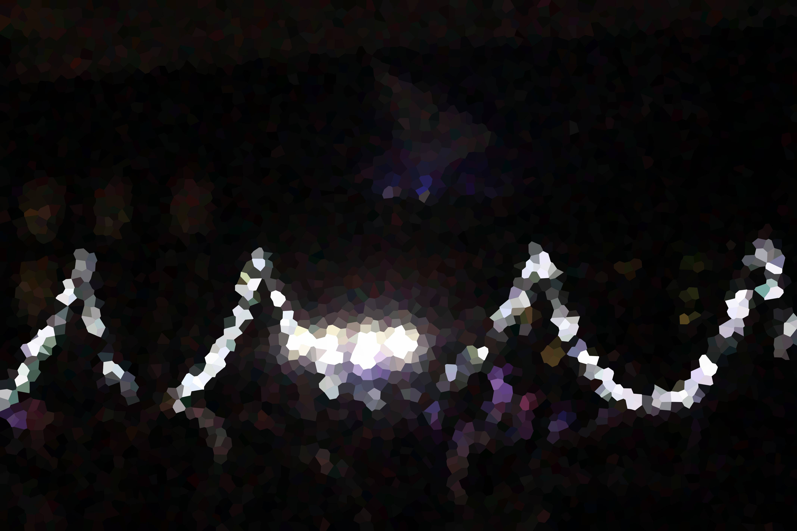

Jack Stoddard Photography
NHS Homecoming 2019/2020

In 1957, the Tugtupite was first discoverd in Tugtup AGTAKORFIA GREENLAND by Professor Henning Sorensen, tugtupite was named after where or was it was found. Tugtupite has a big variety of really cool, of optical properties like tenebrescence, phosphorescene and flurescene.
Corundum (var. sapphire)
The finest sapphire gems come from burma,, sri lanka, sapphires come in alot of diffrent colors but the color blue is the most valuble and popular traditional. The gem corundum (var. spphire) in chimwadzulu hill in malawai. The locality of corundum (var. sapphire) is taraba stae, nigeria.